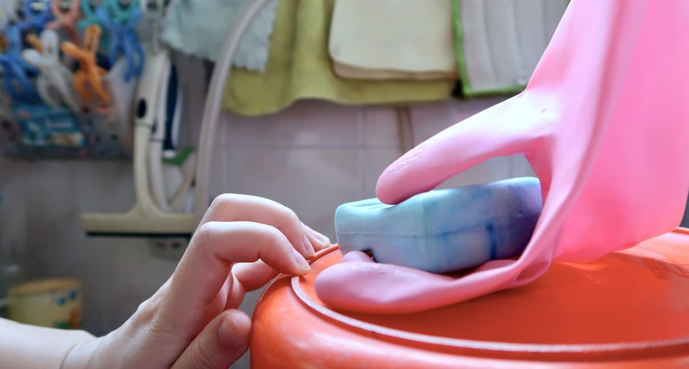

The escalator lifts me
out of the train
station, propelling me forward to fall into step with other
commuters. Our avatars brush past one another bearing our faces, our features relaxed,
even
placid. We
smile at one another as we leave the public transport system. We walk into orange panels
of
light cast
down from the sky, broken up by void deck pillars. Central Air System (CAS) vents mark
the
walls like
the teeth of mouths pulled into awkward smiles.


After some time, I
returned to bed,
still
holding the ban liang, still unable to fall asleep. My
restlessness grew frustrated. It was in this state of thoughtless agitation that I slid
the
coin into my
mouth. Having been warmed by my hands, it now grew hot on my tongue. Saliva began to
collect
around it.
When I swallowed, there was a slight taste of rust. The metallic flavour became a
feeling;
the inside of
my mouth felt like an entity separate from me — an attachment, an added appendage, a
room I
had just
wandered into.